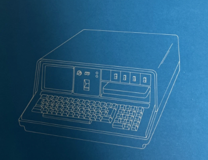

Power-Line Disturbances
The lab treats interference control as a foundational design problem. Prototypes are reviewed for grounding faults, conducted noise, and coupling through shared rails before enclosure design begins.
A condensed technical sheet for the current MadManInstrumentLab direction. Instead of the earlier collage of boxes and diagrams, the content now sits inside the same paper-driven poster language used across the rest of the subsection.

The lab treats interference control as a foundational design problem. Prototypes are reviewed for grounding faults, conducted noise, and coupling through shared rails before enclosure design begins.
Preferred resistor packages are selected for repeatable soldering behavior, stable thermal response, and mechanical tolerance during rework as circuits move from breadboard proof to compact assemblies.
Repeated thermal cycling can fracture packages, weaken joints, and turn stable prototypes unreliable. The lab treats thermal management as a layout and process issue, not only a component spec issue.
Signal paths are reviewed for routing clarity, termination behavior, and predictable response once a circuit leaves the bench and becomes a durable tool.
Pad geometry, board strain, and enclosure-adjacent stresses are reviewed early so bench discoveries can scale into production-safe hardware.
Typical work includes filtering, isolation strategy, power-entry conditioning, and layout choices that lower interference before any public-facing build is considered finished.
This page now functions as the technical summary sheet inside the wider document system rather than as an isolated standalone aesthetic.